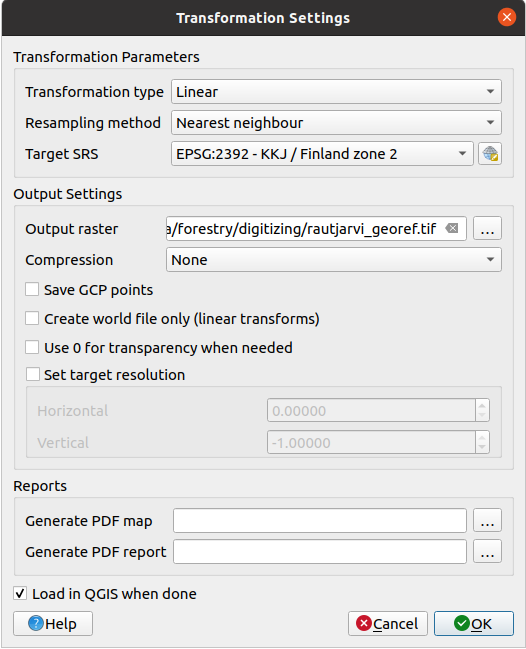

A common forestry task would be the update of the information for a forestry
area. It is possible that the previous information for that area dates several
years back and was collected analogically (that is, in paper) or perhaps it
was digitized but all you have left is the paper version of that inventory data.
Most likely you would like to use that information in your GIS to, for example,
compare later with later inventories. This means that you will need to digitize
the information at hand using your GIS software. But before you can start the
digitizing, there is an important first step to be done, scanning and
georeferencing your paper map.
The goal for this lesson: To learn to use the Georeferencer tool in QGIS.
The first task you will have to do is to scan your map. If your map is too big,
then you can scan it in different parts but keep in mind that you will have to
repeat preprocessing and georeferencing tasks for each part. So if possible,
scan the map in as few parts as possible.
If you are going to use a different map that the one provided with this manual,
use your own scanner to scan the map as an image file, a resolution of 300 DPI
will do. If your map has colors, scan the image in color so that you can later
use those colors to separate information from your map into different layers
(for ex., forest stands, contour lines, roads…).
For this exercise you will use a previously scanned map, you can find it as
rautjarvi_map.tif in the data folder exercise_data/forestry
14.2.2. ★☆☆ Follow Along: Georeferencing the scanned map
Open QGIS and set the project’s CRS to EPSG:3067-ETRS89/TM35FIN(E,N)
in Project ► Properties ► CRS, which is the currently
used CRS in Finland.
Save the QGIS project as map_digitizing.qgs.
You will use the georeferencing tool from QGIS named Georeferencer.
To georeference the map:
Open the georeference tool, Layer ►Georeferencer….
Add the map image file, rautjarvi_map.tif, as the image to georeference,
File ► Open raster.
Click OK.
Next you should define the transformation settings for georeferencing the map:
Open Settings ► Transformation settings.
Set the Transformation type to Linear and
the Resampling method to Nearestneighbour.
Press the Select CRS button next to
the Target SRS option and select the EPSG:2392-KKJ/Finlandzone2 CRS;
it is the CRS that was used in Finland back in 1994 when this map was created.
Click the icon next to the Output raster box, go to the folder and
create the folder exercise_data\forestry\digitizing and name the file
as rautjarvi_georef.tif.
Check Load in QGIS when done
Leave the rest of parameters as default.

Click OK.
The map contains several cross-hairs marking the coordinates in the map,
we will use those to georeference this image. You can use the zooming and
panning tools as you usually do in QGIS to inspect the image in the
Georeferencer’s window.
Zoom in to the left lower corner of the map and note that there is a cross-hair
with a coordinate pair, X and Y, that as mentioned before are in KKJ/Finlandzone2 CRS. You will use this point as the first ground control point for the
georeferencing your map.
Select the Add point tool and click in the intersection of the
cross-hairs (pan and zoom as needed).
In the Enter map coordinates dialogue write the coordinates that
appear in the map (X: 2557000 and Y: 6786000) and their CRS
(EPSG:2392-KKJ/Finlandzone2)
Click OK.
The first coordinate for the georeferencing is now ready.
Look for other black cross-hairs in the image, they are separated 1000
meters from each other both in North and East direction. You should be able
to calculate the coordinates of those points in relation to the first one.
Zoom out in the image and move to the right or the top until you find other cross-hair,
and estimate how many kilometres you have moved. Try to get ground control
points as far from each other as possible.
Digitize at least three more ground control points in the same way you did
the first one. You should end up with something similar to this:
With already three digitized ground control points you will be able to see the
georeferencing error as a red line coming out of the points. The error in pixels
can be seen also in the GCP table in the dX[pixels] and
dY[pixels] columns. The error in pixels should not be higher than
10 pixels. If it is, you should review the points you have digitized and the
coordinates you have entered to find what the problem is. You can use the image
above as a guide.
Once you are happy with your control points, you can save them for later use:
Go to File ► Save GCP points as….
In the folder exercise_data\forestry\digitizing, name the file
rautjarvi_map.tif.points.
Finally, georeference your map:
Go to File ► Start georeferencing.
Note that you named the file already as rautjarvi_georef.tif
when you edited the Georeferencer settings.
Now you can see the map in QGIS project as a georeferenced raster.
Note that the raster seems to be slightly rotated, but that is simply because
the data is in KKJ/Finlandzone2 and your project is in
ETRS89/TM35FIN(E,N).
To check that your data is properly georeferenced, you can
Open the aerial image in the exercise_data\forestry folder,
named rautjarvi_aerial.tif.
Your map and this image should match quite well: set the map transparency to 50%
and compare it to the aerial image.
Save the changes to your QGIS project, you will continue from this point for the
next lesson.

 .
.
 Select CRS button next to
the Target SRS option and select the
Select CRS button next to
the Target SRS option and select the  Load in QGIS when done
Load in QGIS when done